Creations
Posters
Passionate about design and cinema, I am self-taught in Photoshop, recreating movie posters that have visually impacted me in the theater.

The Boy and the Heron

Monkeyman

Jojo - Rohan Kishibe
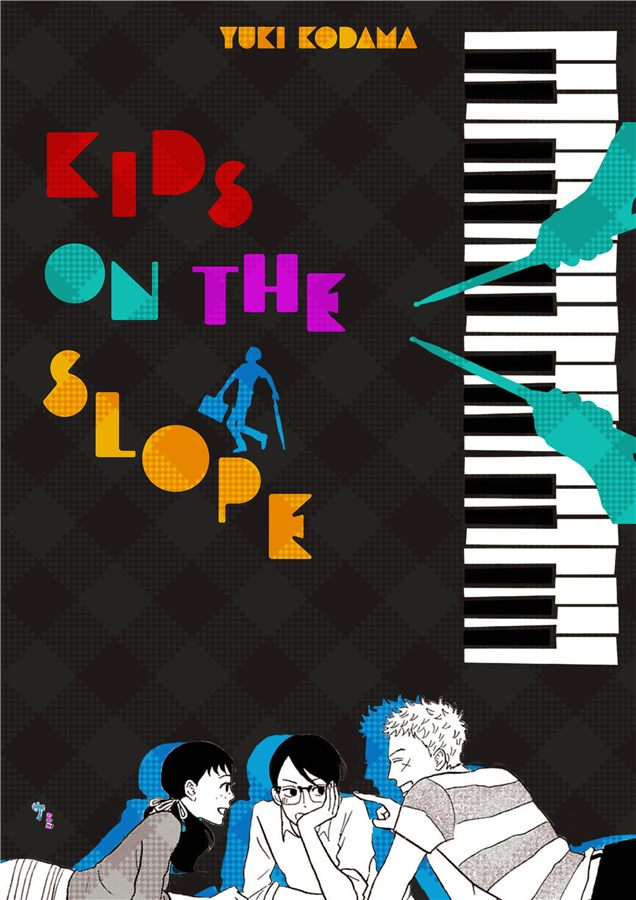
Kids on the slope

Anatomie d’une chute
film photos series
A quiet day with the Yankis (with my crew Eibish)
1980s Japanese television drama aesthetic, crew dressed as yankis, street gangster style as visual narrative. Design technique: documentary photography capturing a small story unfold through moments. Unposed, real, human. The gang becomes the subject, their rebellious style framing a quiet intimacy beneath the surface roughness.
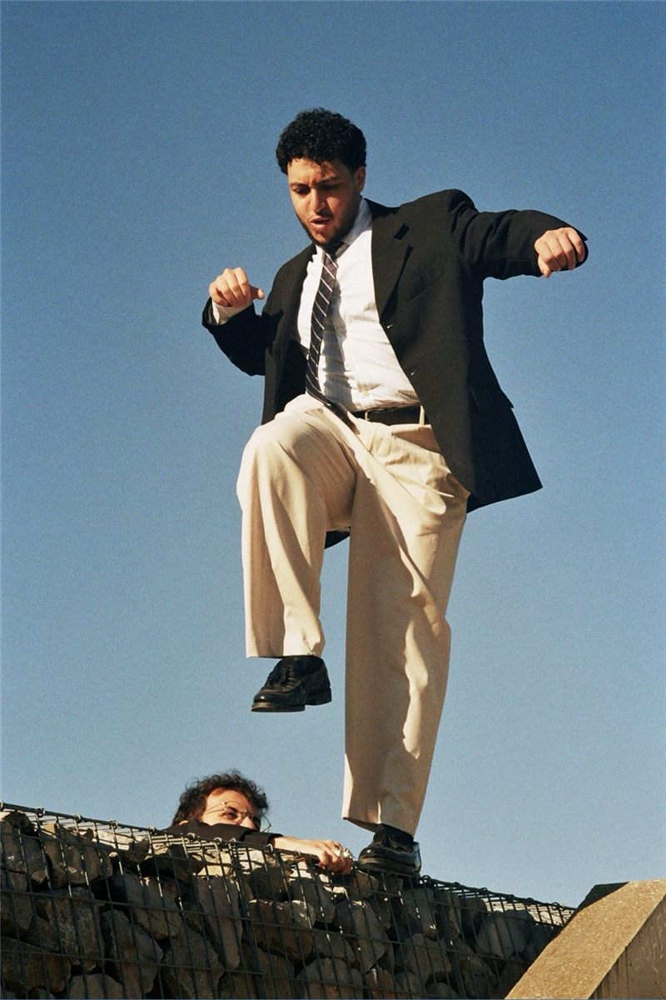


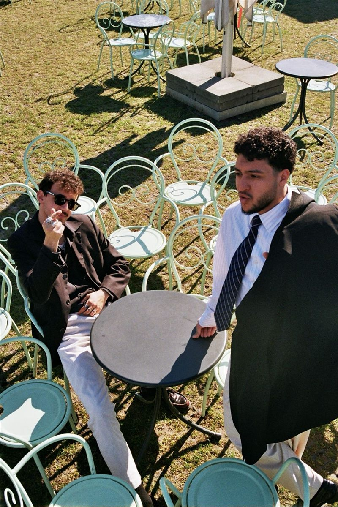
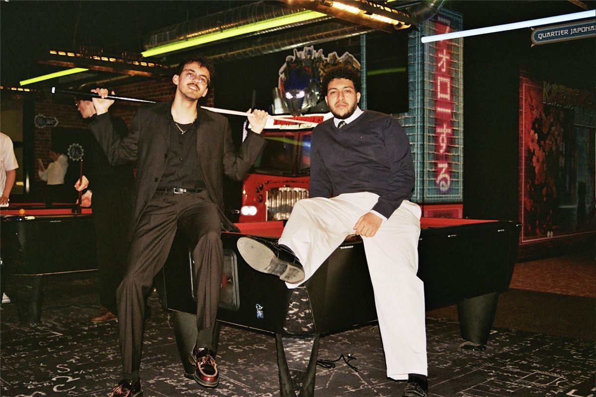


Eibishi’s Home
Black and white film capturing the origins of a trio. Urban exploration documenting the neighborhood that raised us, streets and buildings holding childhood memories. A visual love letter to the concrete and community that shaped who we became.
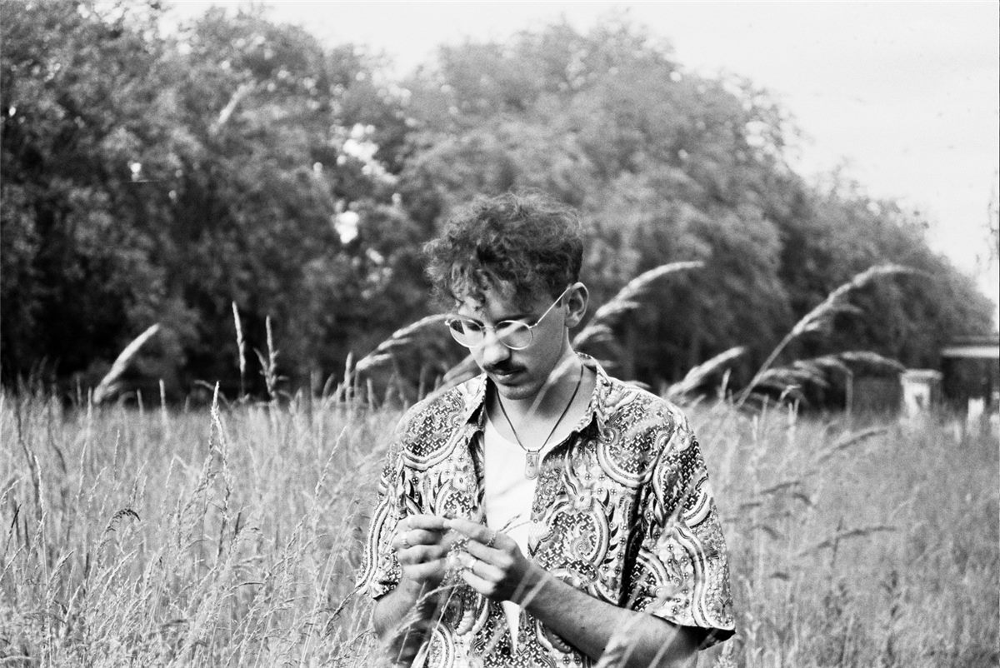

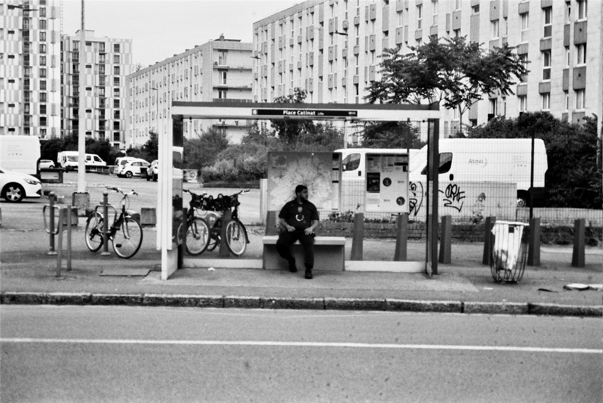

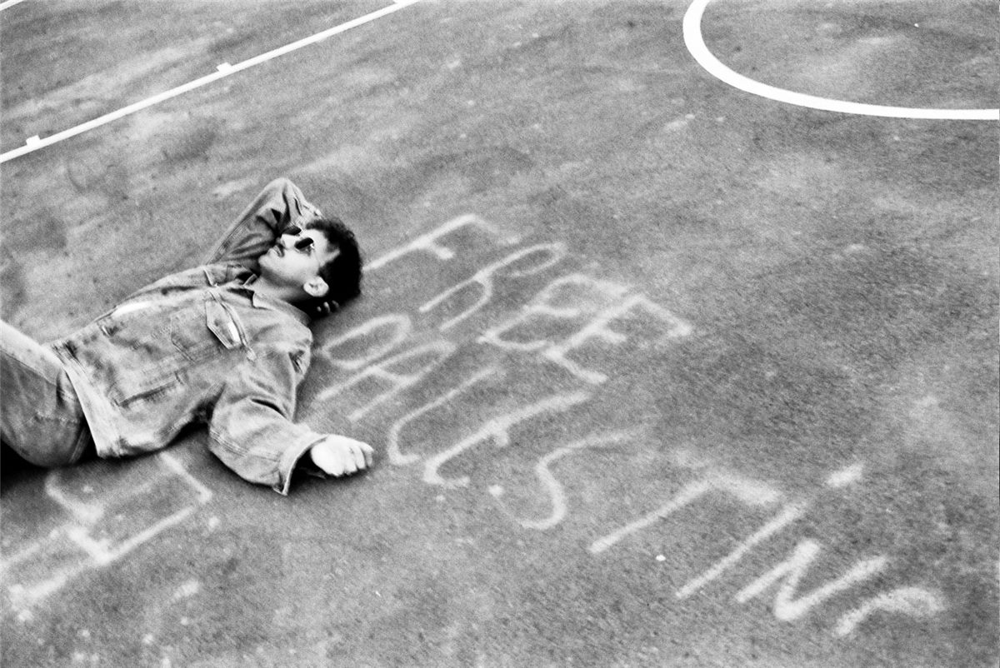


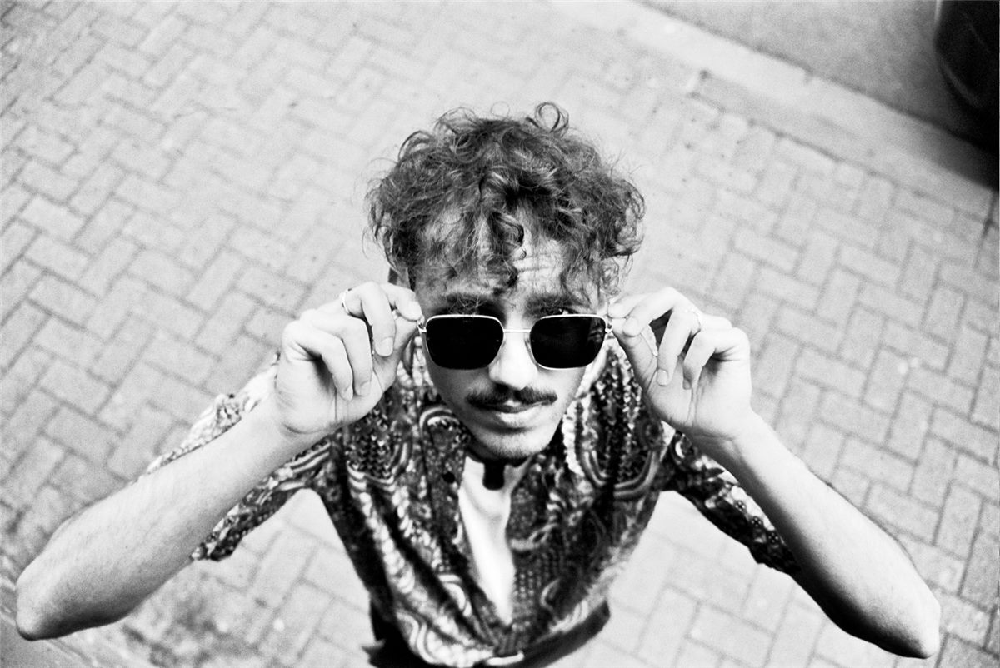


China: Stories in Light
Portraits and landscapes intertwined, like early 2000s geography textbooks where film captured places and people in the same breath. Ancient temples, bustling streets, quiet moments, faces emerging from mist.
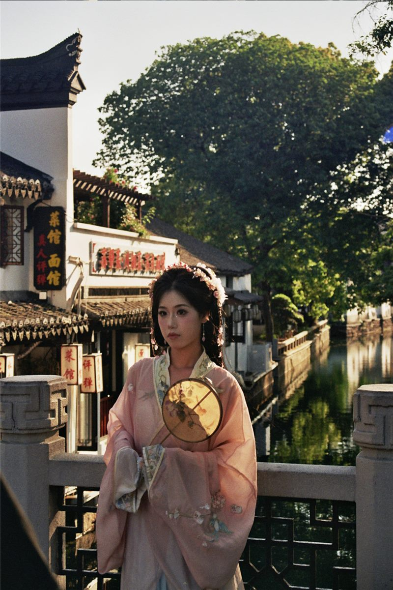
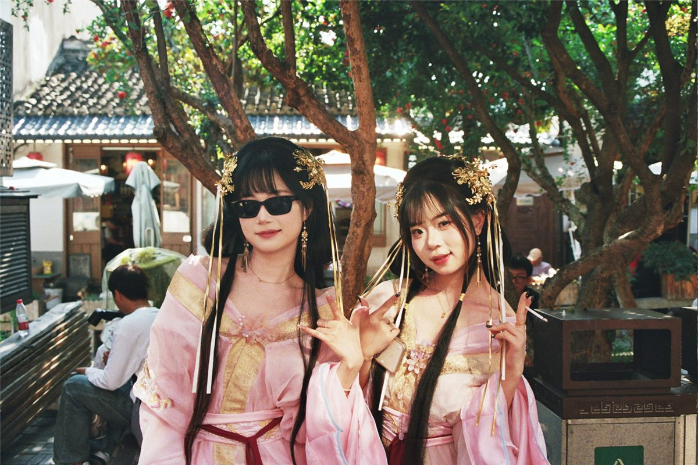


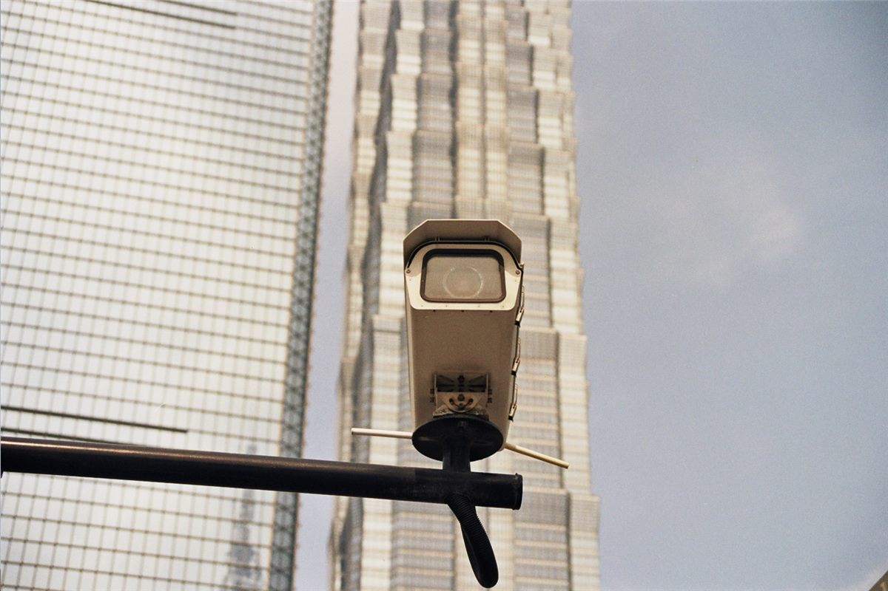
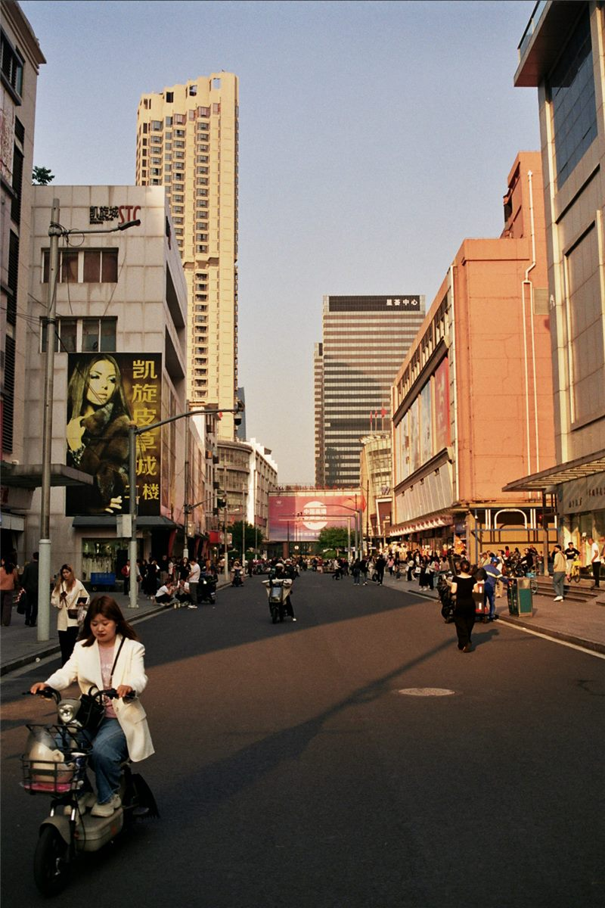

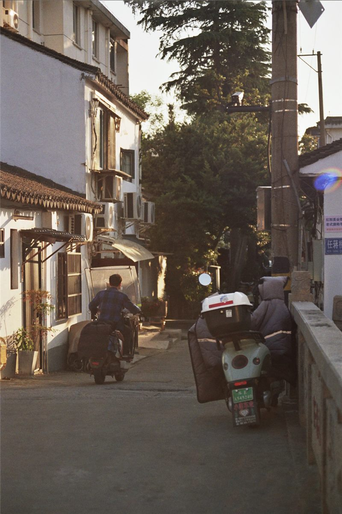


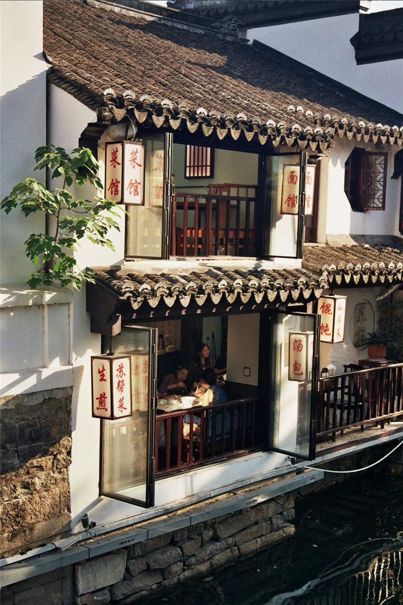

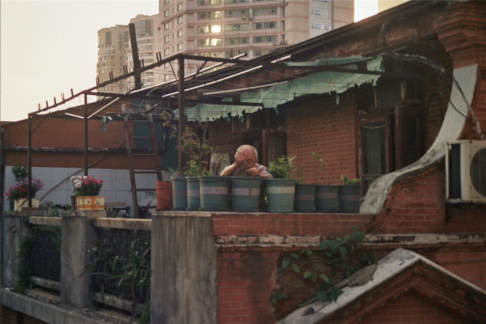